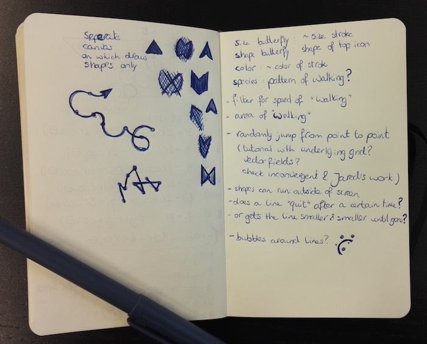
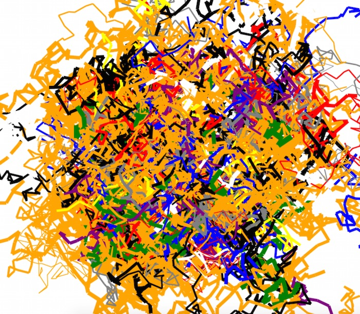
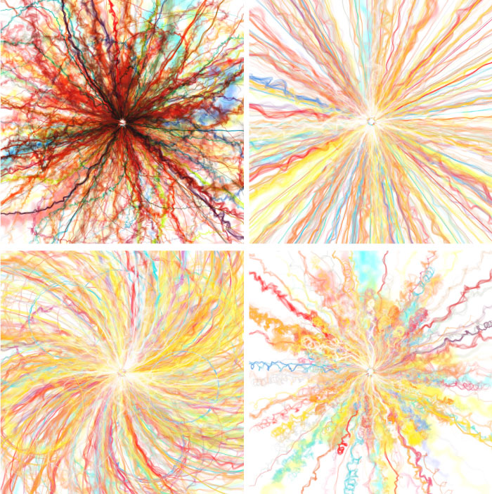
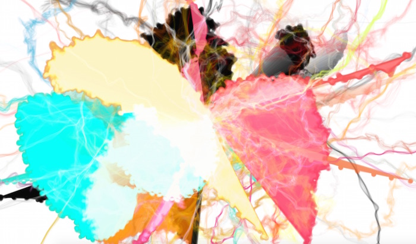
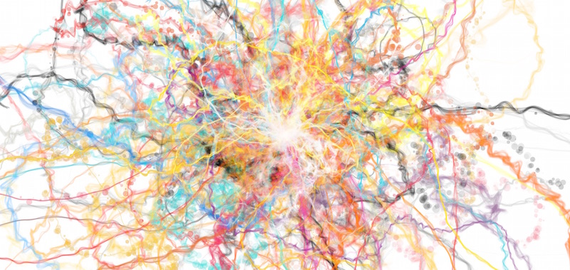
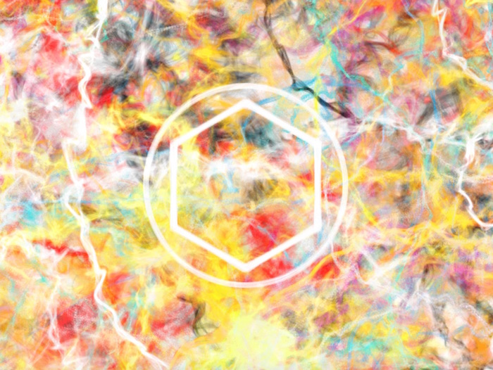
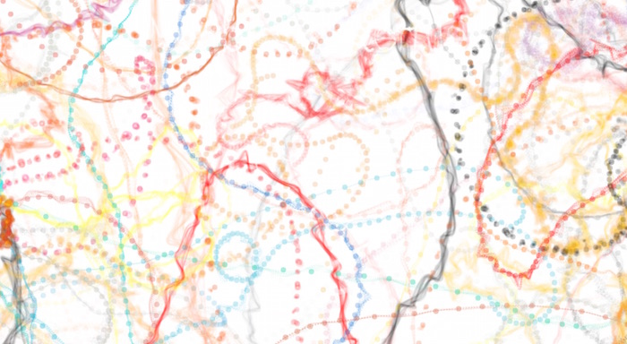
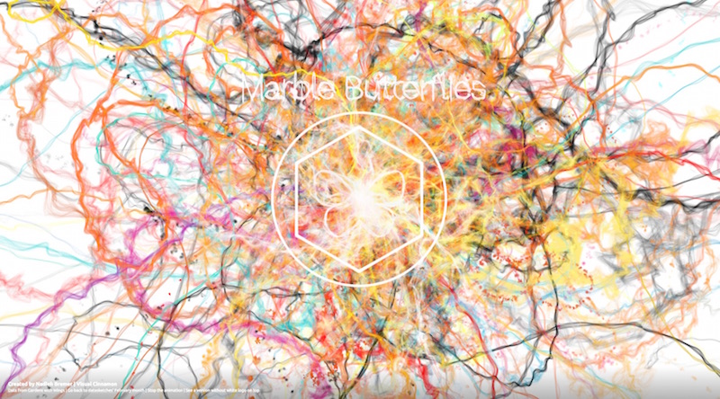
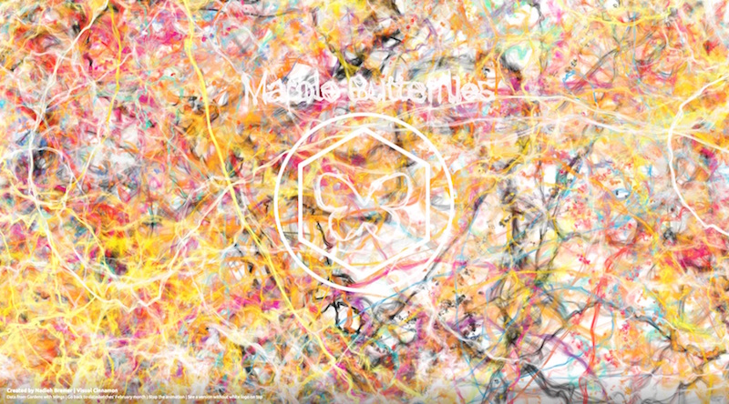

Such a lovely topic, nature, I expected to have loads of ideas once I started on February... But that didn't happen. After spending a bit too much time on January's visual, I had set myself a goal that I wanted to try and finish February within 20 hours, just to force myself to deliver something within a reasonable number of hours. And having a "dataviz" block wasn't helping me stay within that time limit 😞
However, at some point I thought about what defines nature for me, which was evolution and the randomness of mutations that in turn can lead to "better adaptations" to the environment. Which in turn reminded me of generative art and the semi-randomness which often guides those pieces of art. I've always loved generative art and thus suddenly February seemed like the perfect month to give it a try.
Now I only needed a subject to guide the randomness. The first thing I was drawn to were flowers, but damn, I could not find a single dataset about flowers that contained information such as the main color, average number of petals, blooming period, things like that. It was all images for image processing training or taxonomy lists (e.g. what group, family, etc. does the flower belong to). I therefore turned my attention to butterflies, for which I also have a fascination (don't ask my boyfriend how much time he's had to wait for me on vacations while I was trying to perfectly capture a butterfly, 😅 ). But.... same problem, only taxonomy lists, no nice dataset with main wing color, size, etc.
The best (start of a) dataset that I could find, I kid you not, was eventually found on Gardens with Wing. It at least had some pages that divided butterflies into main colors, wing shape, size and species. So I manually turned the results of this pages filters into a dataset with 86 butterflies (found here).

The main color of a butterfly I could use to color whatever path the butterfly was going to have on my screen, the size of the butterfly could guide the thickness of the line/point, whatever I was going to make of it, and the species maybe could guide something else (the type of the path?). That wasn't a lot of information to use, but hopefully it would be enough 😁
Once I figured out the butterfly and generative angle it seemed most appropriate to me to have the butterflies just flit around the screen. They always seem to fly quite randomly once they're near a plant going left, right, quite suddenly.
At first I thought about using the different path options to build up the butterfly's route, maybe Skippers would be straight lines and Swallowtails would be arcs. So that's what I drew below, but after having created a very rough version of the straight lines (1st image in the code section below) I knew that was not going to work :S However, after that point I didn't really go back to sketching, but continued to develop the paths by sketching with code, since it can be rather difficult to truly sketch the end result of random behavior, hehe.
I also drew some shapes because I wanted the front of each path to be visualized by a shape moving along, where each species would get its own shape. And the right page is really just questions or ideas I wanted to keep in mind while coding, such as "should a line (e.g. butterfly) quit after a certain time?"
I knew there would we many many paths all going across the screen at once with probably no interactivity, so this month I finally did it right, I started with canvas instead of d3. For my very first attempt I just wanted the simplest thing in the screen, which in my mind were representing the butterfly "particles" by random straight paths, going in a different direction on each X milliseconds.
Well, that looked absolutely dreadful. Which instantly taught me that making random things look beautiful was difficult (and I got even more respect of people like Jared Tarbell and Anders Hoff).
I started from the sort-of generative example I had used in my "SVGs beyond mere shapes" presentation, which I adjusted from Sketch.js' particle demo to create my butterflies and how to use forces and drags to create random paths for them. On each animation frame one extra step would be added to the total path of the butterfly, thus giving the idea of them "flying over the screen".
The horrible screen-shot above showed me that I would probably need some smoothing of the curves, like d3's line interpolation functions. Thankfully, I could start from the code of this stackOverflow question that sort of draws a curved spline through the points that form the path of the butterfly. Below you can see some of my earliest tests, first just getting a smooth curve and once I figured that out I started to gently jitter the path of the butterflies after each frame to get a more random looking path. And once I also dropped the opacity a lot and got to the smoky bottom orange line in the image below I finally felt that this could turn out ok after all 😄

For ease I just let all my paths start from the center, but that did already create some interesting results once I let more butterflies free across the screen. I started to add some rules based on my actual butterfly data. Each frame a few butterflies are created, they are picked from the dataset of ±50 butterflies (I filtered out the browns, that's just an ugly color). The color of the butterfly path is then defined by the main color of the butterfly. However, to get more diversity I used Tinycolor.js to pick randomly between 5 very similar colors (so for blue, it might go a bit more dark blue or a bit more aqua). The opacity and thickness of the path and the amount the path is "jittered" is governed by the size of the butterfly (I have small, medium and large). Naturally, large butterflies have thicker paths.
I then turned to the paths themselves. In my initial set-up, the paths were quite straight. A butterfly would dash over the screen never to be seen again. Well, to mimic a butterfly more I started to make more curved paths, but that took some effort to create in a semi-random fashion, that once a butterfly was curving towards a side it would do so for a bit of time before potentially starting to curve towards the other side. In my tests below I had actually also taken out the black butterflies, because I thought that color would also not look nice, but eventually I placed them back in. Also, the top left is when using a multiply blend mode on the canvas whereas for the others I had switched to screen
Only lines seemed a bit boring, so I also played around with different paths. The smallest butterflies now get a dotted line and for one particular species, the "Skippers" I implemented circles instead of a line. But again here I had to experiment, because jittering a set of circles around will eventually only result in a very thick blobby line. In the image below the circles were drawn thankfully, but somehow the underlying path was also being filled 😅
Alright, things were starting to look better and more diverse now. I played around with different bubble effects. I quite like the "scatter" approach of the screen-shot below, but this was taken just a few seconds after initialization. If you kept it running longer, the circles would completely disappear due to the lines overdrawing the circles every frame, whereas the circles were never drawn again. Thus in the end I decided to also keep drawing the circles over and over, but only give them a very small jitter and stroke them instead of filling them.
Instead of the butterflies starting from the center, I had them start from right outside the screen and fly in to get a better spread (however in the final version the script randomly chooses between the center/outside set-up because I couldn't choose 😁 ). For fun I added the hexagon + circle of datasketches' logo in the center and played around with getting a butterfly shape in the middle of that which still looked a bit random (but recognizable as a butterfly), which eventually took about 3-4 hours to figure out o_O
Using openType.js that Sarah, our guest for this month, recommended I could recreate a font as a canvas path and then also wiggle that around to get a less clean look which fit better with the overall style (although in some iterations the wiggling is so weird that you can't really read it anymore, haha)
The final thing that I tried was to also place markers at the start of each path, as if those were the butterflies (as I'd drawn in my sketches). The screen-shot below shows a test where I hadn't erased the earlier markers (here just circles), but it became clear quite fast that this was not going to be an improvement. The circles darting over the canvas were highly distracting and not really needed, in the first few seconds you can quite clearly see the different paths growing and twirling about, which was enough for me
After what seemed like endless tweaking of the paths to get better looking results I checked out my timing app and saw that I'd reached 19:45 hours for this month, so it was time to finish it off (with this write-up added I think I'll end somewhere around 21:30 hours). I added a link below that opens a version without all the white logo stuff on top and also a "button" (really only some text) in the bottom section to stop the animation, otherwise it just goes on an on eventually making the page white again.
I've called it "Marble Butterflies" because the smoky lines across the screen remind me of the patterns in marble. You can see the final result below, although due to the randomness, every version will be a completely unique piece of data art 😉
 It was quite fun to not focus on creating something that should be "understood" in a sense, but just experiment with stuff and keep the things that look kind of cool. I'd like to continue to investigate the more artful or generative side of dataviz I guess 😃
{kind=link}
{kind=link}
{kind=link}
{kind=link}
{kind=link}
{kind=link}
{kind=link}